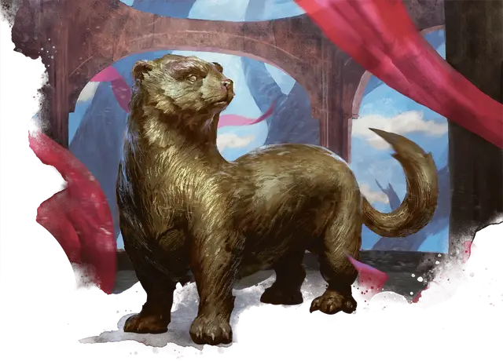

Бронзовый соболь
Bronze Sable
Средний Конструкт, без мировоззрения

Класс Доспеха 15 (природный доспех)
Хиты 32 (5к8 + 10)
Скорость 30 футов, лазая 30 футов
| мод | спас | ||
|---|---|---|---|
| СИЛ | 13 | +1 | +1 |
| ЛОВ | 16 | +3 | +3 |
| ТЕЛ | 15 | +2 | +2 |
| мод | спас | ||
|---|---|---|---|
| ИНТ | 3 | −4 | −4 |
| МДР | 14 | +2 | +2 |
| ХАР | 1 | −5 | −5 |
Навыки Скрытность +5
Иммунитет к урону огонь, яд
Иммунитет к состояниям истощение, окаменение, отравление, очарование, паралич
Чувства тёмное зрение 120 футов, пассивное Восприятие 12
Языки понимает один язык своего создателя, но не говорит.
Опасность 1 (200 опыта)
Бонус мастерства +2
Особенности
Обманчивая внешность. Пока бронзовый соболь не двигается, он неотличим от обычной статуи.
Тактика стаи. Бронзовый соболь совершает с преимуществом броски атаки по существу, если как минимум один союзник соболя находится в пределах 5 футов от этого существа, и этот союзник дееспособен.
Внезапная атака. Если соболь застаёт существо врасплох и попадает по нему атакой во время первого раунда боя, цель дополнительно получает 10 (3к6) урона.
Действия
Мультиатака. Соболь совершает две атаки Укусом.
Укус. Рукопашная атака оружием: +5 к попаданию, досягаемость 5 футов, одна цель. Попадание: 7 (1к8 + 3) колющего урона.
Описание
Первые бронзовые соболя были преподнесены Караметре как дар Пирфора, чтобы они служили главным образом стражами в храмах Караметры. Но по мере того, как создавались другие, некоторые использовались в качестве проворных разведчиков, которые всегда начеку в случае опасности.
Кованые
Первые кованые были созданы богом кузницы Пирфором. Он передал секрет вдыхания жизни в этих металлических существ своим самым преданным последователям, чтобы они могли подражать его работам и изобретать новые формы в своих собственных кузницах.
Некоторые кованые являются бдительными стражами святых мест, другие служат фамильярами и посланниками, а некоторые были созданы, чтобы подражать красоте, свойственной животным мира смертных. Каждый проявляет особенности, соответствующие его роли, а некоторые ведут себя как дружелюбные существа или стоические стражи.
Несколько чрезвычайно редких и ценных кованых были изготовлены рукой самого Пирфора. Некоторые из этих великолепных творений теперь являются семейными реликвиями монархов; другие затеряны в песках времени или охраняются древними монстрами.